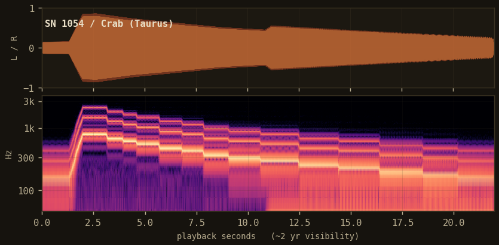
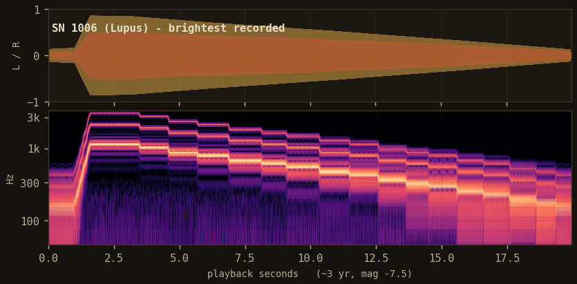
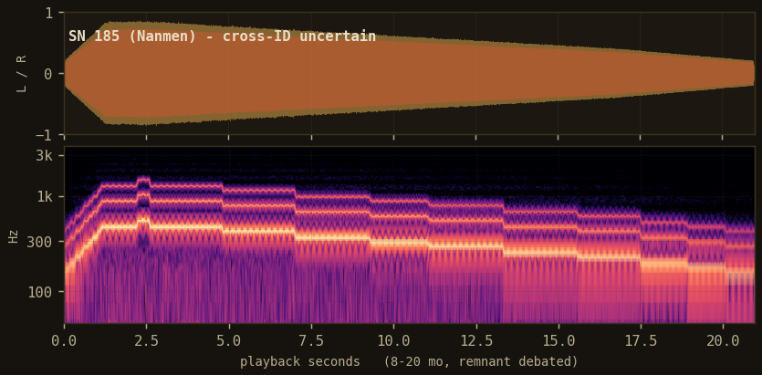
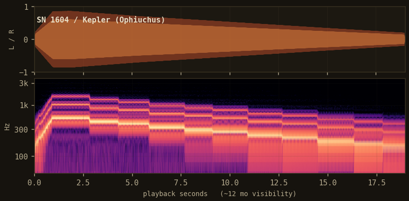
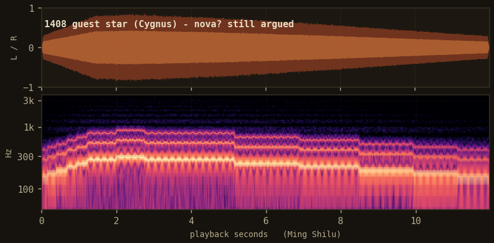
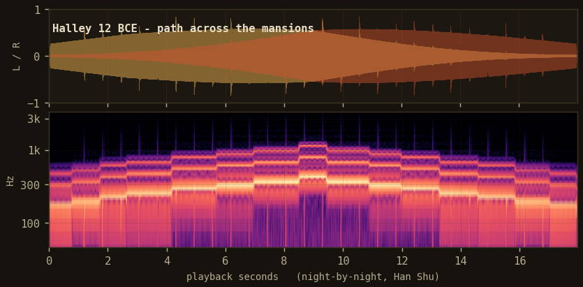
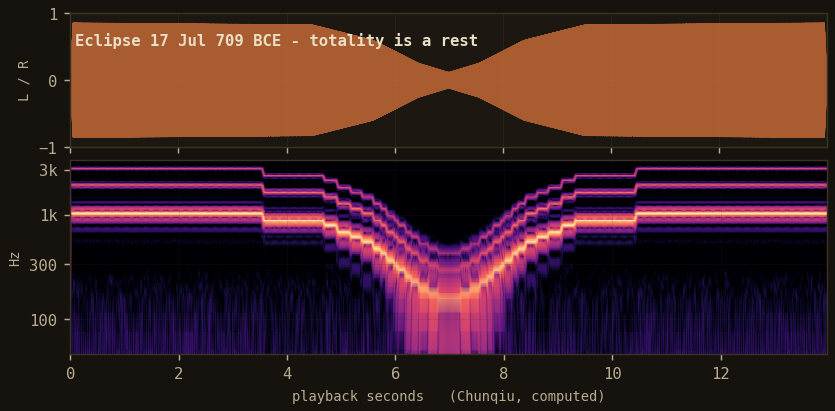
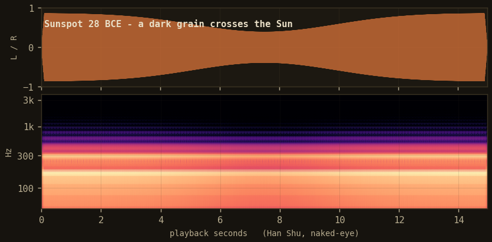
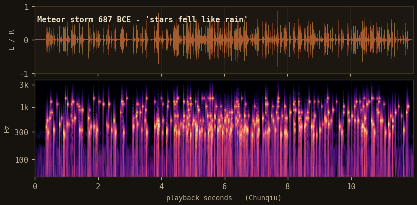
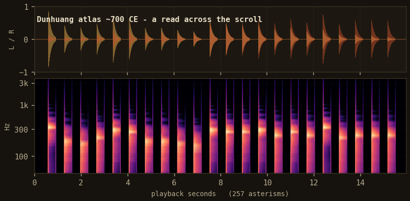

XJ-1054 · sonification22.4 s
Guides / Audio gallery
Forty-two curated records, each rendered by the library with the mapping it was published with. Ten are laid out in full below, with the plate, the player, and the record card. The remaining thirty-two are listed in the catalog; every one of them regenerates locally from xj.records(). Nothing here is a tune. Each sound is a reading of the numbers a record already holds.
Every card names four things: the primary source that recorded the event, the modern cross-identification that ties the old text to a known object, the confidence of that link, and the uncertainty the sound is allowed to carry. A debated remnant stays labelled debated, and the audio never claims more precision than the record holds.
date_sigma and pos_sigma, so a coarse record sounds coarse.grid="continuous".










The ten records above are the rendered set. The gallery holds forty-two in total; the remaining thirty-two are listed here with the same four fields. Each ships with the package and renders locally in one line, xj.sonify(xj.from_record(id)), so the audio is reproducible rather than pre-baked. The astronomy is fixed: SN 1006 in Lupus, SN 1054 in Taurus, SN 185 as the RCW 86 candidate, SN 1604 as Kepler's, the Suzhou planisphere engraved in 1247 CE.
| Record id | Event | Cross-identification | Confidence |
|---|---|---|---|
XJ-0369 | Guest star of 369, near Ziwei enclosure | possible supernova, unremnant | candidate |
XJ-0386 | Guest star of 386, in Sagittarius | SN 386 candidate remnant (G11.2-0.3) | candidate |
XJ-0393 | Guest star of 393, tail of Scorpius | possible supernova, remnant debated | candidate |
XJ-0837 | Guest star of 837 | nova or comet, reading contested | debated |
XJ-0902 | Guest star of 902 | nova candidate | debated |
XJ-1181 | SN 1181, in Cassiopeia | Pa 30 / 3C 58 (both proposed) | candidate |
XJ-1572 | SN 1572, Tycho's star, Cassiopeia | Tycho's SNR (SN 1572) | secure |
XJ-1592 | Guest star of 1592, Korean record, Cassiopeia field | identification unresolved | debated |
XJ-CMT-0240BCE | Comet of 240 BCE, earliest Halley return recorded | 1P/Halley, back-computed | computed |
XJ-CMT-0837 | Halley, 837 apparition, closest approach to Earth | 1P/Halley | secure |
XJ-CMT-1145 | Halley, 1145 return | 1P/Halley | secure |
XJ-CMT-1301 | Halley, 1301 return, Giotto's model comet | 1P/Halley | secure |
XJ-CMT-1106 | Great Comet of 1106 | possible Kreutz-group fragment | debated |
XJ-CMT-1577 | Great Comet of 1577, shown to be superlunary | C/1577 V1 | secure |
XJ-ECL-0601BCE | Solar eclipse, Spring and Autumn Annals | total eclipse, back-computed | computed |
XJ-ECL-1221 | Solar eclipse of 1221, Yelu Chucai's timing | total eclipse, back-computed | computed |
XJ-ECL-1361 | Solar eclipse, Ming record | annular eclipse, back-computed | computed |
XJ-ECL-LUN-0755 | Lunar eclipse timing, Tang court | lunar eclipse, back-computed | computed |
XJ-SUN-0165BCE | Candidate earliest naked-eye sunspot | reading contested | debated |
XJ-SUN-0188 | Naked-eye sunspot, 188 CE | sunspot group, cycle unknown | secure |
XJ-SUN-1128 | Sunspot of 1128, described and drawn | sunspot group, cycle unknown | secure |
XJ-MET-0902 | Meteor storm of 902 | Leonid or Taurid, undetermined | candidate |
XJ-MET-1002 | Meteor storm of 1002 | shower undetermined | candidate |
XJ-MET-1366 | Meteor storm of 1366 | Leonid storm candidate | candidate |
XJ-AUR-1128 | "Red vapor" over the northern sky, 1128 | aurora candidate | candidate |
XJ-AUR-1770 | Great aurora of 1770, East Asian records | major geomagnetic storm | well-attested |
XJ-CHART-SUZHOU | Suzhou (Soochow) planisphere, engraved 1247 CE (drafted ~1193) | Song whole-sky chart, ~1,440 stars | well-attested |
XJ-CHART-XINYI | Su Song's star maps, Xin Yi Xiang Fa Yao, 1092 | Song printed atlas | well-attested |
XJ-CHART-KOGURYO | Cheonsang Yeolcha Bunyajido, engraved 1395, Korean | whole-sky planisphere | well-attested |
XJ-OCC-1071 | Lunar occultation of a bright star, 1071 | occultation, back-computed | computed |
XJ-VAR-MIRA | Mira Ceti, early recorded periodicity (example curve) | omicron Ceti, AAVSO phase fold | secure |
XJ-VAR-ALGOL | Algol, candidate ancient variability note (example curve) | beta Persei, eclipsing binary | debated |
To render any row, load it and sonify it: xj.sonify(xj.from_record("XJ-1572")). The whole gallery rebuilds with the loop on the install page.
The gallery grows the way the sibling archive grows: one well-sourced record at a time, most of them added by students. A record is accepted when it carries a citable primary source, a stated cross-identification with an honest confidence grade, and the uncertainty that grade implies. You do not need to be an astronomer; you need to read a source carefully and refuse to overclaim.
date_sigma), position (with pos_sigma), cross-id, and confidence.